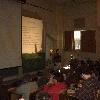
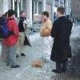

I finally got to see the new Euro; the coins look odd and slightly toy-like to me. The Europeans often said the same thing, actually. As a visitor, though, the Euro is wonderful - it's great to not lose all your money to the moneychangers when moving between European countries.
At the pub I briefly chatted with Raphael Bauduin, the lead organizer of FOSDEM. He told me that 750 people were registered and he was expecting many more unregistered attendees. Exact numbers are not available, but at one point during the FOSDEM conference itself there were 1000 people in the two conference rooms. That doesn't account for those not in the rooms at the time, nor does it account for those who only attended part. The best guess (figured out by Raphael at the end of the conference) is that there were at least 1300 different attendees at FOSDEM. There were women, but very few of them; according to OSDN, 98% of all open source and free software developers are male. I'd love to see more women participate in the future.
I really respect Raphael's vision for an inclusive conference. In particular, he made sure that people with few funds could attend, because there was no required attendance fee. Funding was provided by a number of sponsors, including O'Reilly, OSDN, Cisco, Sharp, and others (see the FOSDEM website for the list; every attendee got information about each sponsor when they came). Donations were also requested, and it was clear that many donated.. but even if you felt obligated to contribute, the donations cost far less than the typical conferences I go to. Keeping costs controlled was clearly a conference goal; they met at a university, for example. As a result, the FOSDEM organizers managed to pull off a major event while allowing those with few funds to participate. Having so many people in one place gave it a far more electric feel than some conferences.
I soon realized I couldn't think straight from fatigue, so by about midnight I was in bed and quite gone.
Richard Stallman gave a presentation on free software (what it is, why he started it, and why it's important). If you've read his writings at the fsf.org website, you've heard all this, but it was still interesting to hear the pitch in person. At first, when told he only had an hour, he seemed surprised and said "I can't do my usual free software speech". .. but he relented and give a shortened presentation that was quite satisfactory. He started by saying that, "About 18 years ago I started developing the GNU operating system, that would be free software. Many were developing new operating systems for technical reasons; my reason was socialpolitical/ethical reasons." He chose Unix because it was portable (he hadn't used it then, though he had read about it). He gave the story behind naming GNU - he was searching for a funny name that was a recursive acronym ending with "not Unix", and once he found GNU it seemed obviously correct. He asks that people pronounce it "guh-new", because GNU has been in development a long time and it's obviously not a "new" system. Interestingly, gnu is a loan word from an African language - in that language, it has a click sound.
He noted that copyleft was created to protect software from becoming proprietary, and also gives a reason for someone to release their contribution as Free Software. The latter has been very advantageous; the C++ compiler was developed by an organization that didn't like to release software for free, but they wanted to use the existing gcc compiler as a basis.
The order he developed the GNU components in was based on the order that he thought would require the least effort, re-using as much as possible. After all, most people didn't think he would succeed at all -- he did believe it was possible, but he had to work smartly to do so. He delayed development of the kernel until the Mach microkernel was ready and Free, so the FSF could then begin development of the Hurd. "I thought this would make things faster - I was wrong, it turned out to be very difficult to implement". Torvalds used a traditional monolithic design for his kernel, and got it implemented far more quickly. Stallman stated that because GNU's work and name is not mentioned, GNU's goals of freedom are not even mentioned or discussed where their products are used. He encouraged people to agree with him that it was ethically necessary that users be able to modify and redistribute their software (and participate in a community of users).
At one time, the problem was finding developers; he believes that now that's not so hard. The problem now is that there are laws that try to make it illegal to write Free Software. In the US, this is represented by two awful laws: the DMCA (which prevents making copiers or viewers, even for legal uses) and patent law (since they've been recently expanded to cover software ideas). He went over the definition of Free Software, amplified it, and contrasted it with proprietary software. For example, he noted that only the owner can support a proprietary program - and since they have a monopoly, there's little reason to provide good support (so often their support is terrible). Preventing sharing of software inhibits helping neighbors; he believes that this ability to help your neighbor is necessary for a society, and noted that all major religions encourage people to help their neighbors. Proprietary vendors want people to think that sharing is equivalent to attacking ships, and noted this was nonsense. At best, it's "unauthorized copying". Instead, he advocates that people to never use proprietary software at any time (other than as a temporary measure to produce a Free version). He believes that there are two separate movements - "open source" and "Free Software" - that have different motives, though obviously they can often work together.
Stallman then donned his famous "Saint Ignucious" garb of the "Church of Emacs", and made several amusing pronouncements such as "vi is not a sin in the church of Emacs, as long it's Free Software - it's a penance." However, he explained why he doesn't want pictures of this garb circulating as pictures by the press, since someone who hadn't heard him talk and just saw the picture might think he actually believed in the "church of Emacs." His statement: "I'm an atheist - I don't believe in sainthood - this is just comic relief".
A question and answer period followed. One questioner asked "How I can build a multimedia system while staying independent, making enough money to live on, and [producing a good product]?" Stallman responded that "To be ethical, you may have to drop some of your desires. You may be able to do them all. Perhaps dropping independence would help, e.g., by requesting government or business support. You could just take a chance - start writing it and hope others join in." However, in Stallman's view, writing proprietary software is always unacceptable.
Another questioner asked "What about embedded systems?" In Stallman's view, once it becomes feasible to download new programs, then these issues arise and it should have Free Software, not proprietary software.
After this, the European Parliament will consider it, and possibly accept it; then the various countries will write it into their laws.
The DMCA directive has already been accepted by the European Parliament, unfortunately. On the positive side, the EU is funding free software projects.
One presenter commented that "Patents are like Windows - they're on every economist's desktop". Many economists assume that software patents are good (even though the evidence is overwhelmingly against them), and economists simply haven't examined the issue. Economists need to see open source/free software systems run; they generally don't know what code is. The speaker said that we need "generic software" like we need "generic drugs", e.g., competition and less-expensive products. There's a term called "the patent thicket" - when you need to use many ideas (e.g., software), the cost of licensing (and negotiating them) becomes greater than the resulting value, inhibiting new products. We need to write down a goal of protecting "public domain" / "generic" software in law.
"Open source" is important to the E-Europe project; I didn't get more information about this project.
Many are concerned about free software in universities - not because of patents, but because of liability. Often the source code is just "on the tape" - not practically available, so it's not open to review (say for security assessments) or distribution.
Stallman made several arguments against patents. In the past, the software industry wasn't governed by patents, and the industry still thrived. He argued that Beethoven could not have written good symphonies if he was subject to "musical idea patents". Hippo at MIT found that users are responsible for innovation - far more than they're given credit - and patents interfere with this.
An audience member said that patents made some sense a long time ago to protect the inventor, but they make no sense now. What can be done to remove them in software?
There seems to be no evidence that patents actually help innovation, but in many industries there's a symmetrical relationship (a few big companies with cross-licensing agreements), so they at least don't hurt (more specifically, patents don't hurt those companies). Now we have a different circumstance, where there is an asymmetry - many small groups can innovate as well as big companies, so patents more obviously interfere with innovation.
 For more details on what I said, go look at https://dwheeler.com/secure-programs. In short, I presented a long list of guidelines on how to avoid the security failures that past programs have had. The same mistakes get made in programs, because how to actually implement secure programs isn't taught and there haven't been many documents for developers to read so they can learn how to write secure programs. The list is long; I covered 33 slides in 45 minutes, and I could only summarize the issues. Although it was only a summary, I hope that it was enough to help people consider security problems that maybe they had not before.
 For more details on what I said, go look at In many ways, afterwards was the best part - a smaller group of people wanted to discuss specific issues in security, so we moved outside and discussed them, moved back inside to participate in the panel, and then moved on and discussed more issues on how to write secure programs. It was all very intellectually stimulating.
We then got locked into the campus building for a short time - it seems that campus security didn't know what to do with a conference where the people wanted to stay and talk. Once out, we hit the restaurants and stayed up way too late, discussing how to improve open source/free software and often just getting to know each other.
His presentation started with a nice and simple introduction to cryptography. He noted that not only did DES have a short key length, but the short block size of DES also limited its future use. DES uses 64-bit block sizes, so there are 2^64 different possible block values. When more than the square root of the possible block values is sent, a significant amount of information leaks. In the case of DES, that means that you shouldn't send more than 2^32 bits with a single key. Since Rijndael uses 128-bit blocks, you can send more data with the same key (2^64 bits using this logic). He went through the Rijndael algorithm, stressing how simple it was (compared to other algorithms). In particular, he carefully designed the algorithm to be easily optimized.
This talk introduced an open source implementation of IETF PKIX, a standard for establishing organizational security (it's a "public key infrastructure"). It's released under the GPL. It includes OpenSSL, OpenLDAP, and Perl/PHP scripts that implement the standard. Their priorities were industrial strength, flexibility, modularity, and interoperability. The core implementation is in Perl; all the UI is via the web and PHP. Version 1.5 had user certificates (decentralized); version 1.6 added server certificates (decentralized). Version 1.7 is to come; it adds centralized user certificates and key escrow for encryption keys (version 1.7 exists in beta, but it's not tested well yet and they need to get agreement from the customer before releasing it publicly). Currently they've only tested it on Red Hat Linux 7.1, but the next version will support more platforms and will be easier to configure. He'd like to eventually replace parts of OpenSSL; OpenSSL does many things well, but it has various weaknesses he'd like to fix (for example, it doesn't support common hardware driver standards).
I didn't get a good sense of how mature the product was, unfortunately.
Peter emphasized Mozilla as a platform and source of components, as well as a browser. There are lots of smaller components (e..g, Javascript, LDAP SDK, etc.); Komodo (Activestate) etc. use them for other projects. Gecko is the basic browser component; it combines many other components (e.g.,, parser, Javascript, DOM, Layout, Security).
Mozilla.org's purpose isn't primarily to distribute it directly; they release a version so that everyone else can then (1) debug and (2) distribute. They are getting ready for Mozilla 1.0, focusing on stability, performance, and standards compliance - "it's getting close now." They're freezing the APIs, which is a real help to API users. XUL is considered an API, and it's been changing a lot - they expect that with Mozilla 1.0 there will be a XUL 1.0. Every day they have a nightly build; every 5-6 weeks they branch it, stabilize it for a few days, and release a milestone release.
Peter mentioned the other tools the Mozilla project has created - LOTS of others use Bugzilla, for example, because it's a great tool.
Tristan talked, emphasizing the need for web pages that comply to open standards. Otherwise, the web will be split into pages that can be read by only browser or another, which would be terrible for everyone. If you find an invalid web page that Mozilla doesn't handle (because it's non-standard), report it to Bugzilla under "tech evangelism" module. It sounded like they would find a contact person on the website, diagnose/find a workaround, send a letter to webmaster, make sure they fixed the bug, and mark the bug in Mozilla as "Works for me". Document what you do in Bugzilla mentioning the keyword "Eurocontest" (the top 50 contributors before June get a T-shirt). See http://mozilla-evangelism.bclary.com/europe for more information.
I completely agree - a "split web" is terribly undesirable, so web pages should certainly comply with the standard. However, I think the Mozilla project will need to implement some of the nonstandard things that Internet Explorer does, since users need to be able to read some of these pages. I suspect that will happen too.
He noted that the best search engines (like Google) only index about 20% of the "core" web (e.g., the pages that connect to each other). It's even worse for pages that link TO the web core, but don't have anyone linking to them... they're generally unfindable using traditional approaches, since search engines will never be able to follow a link to them.
He noted that nothing in life is truly free. In particular, search engines want to know (and record) what you're looking for, and then sell that data to others; you may want to be careful what you search for.
If you're looking for something, use at least two main search engines when starting with a broad query (more is better). For example, Google is somewhat U.S-centric, so non-U.S. data may be missing.
Search engines can't really return all the "results" they claim - he calls this the "yo-yo" measure. Many search engines accept money payments to move something into the top ten, and many web sites do complex tricks to fool search engines. As a result, the top entries are often not really what you wanted. Google does pretty well, comparatively; but others are often bought or fooled into believing that certain pages are more relevant than they really are.
Use MORE search terms, in lowercase. Even repeating the same term twice helps ("nikon nikon"). This is odd, but it basically hints to search engines that you really want something that prominently discusses the term, not just a popular page that peripherally mentions the term. You could switch to looking for page names, e.g., "nikon.htm" or "links.html#nikon".
Of course, this won't find most items on the web. The problem is then how to search the four-fifths of the core Net that is not indexed. You could use Netcraft to look for websites with the name you're looking for (e.g., "nikon"); sometimes this helps. Often you need to comb (search people who have already searched). Usenet (e.g., via Google's newsgroup search), messageboards, homepages, and webrings will all help you find these other people who have collected the research, so that you can find them.
Here are a few other random comments:
First, Miguel discussed GNOME, which is mostly written in C, C++, Python, and Perl. GNOME has three parts: a desktop, the development platform, and a suite of productivity applications. GNOME's goal is to support any programming language and to support component programming (the latter, via Bonobo).
The problem, as he sees it, is that open source tends to use old development tools (such as C) that make applications more costly to develop. For example, Evolution (an email/groupware) took 750K lines of code, 2.5 years, 17 programmers. That's a lot of money, and thus applications are slow to develop and improve. He believes "we need better tools."
".NET" is a marketing term in Microsoft. Under this umbrella there are lots of technologies, including Passport, etc.; that's not relevant to this talk. What's relevant is the ".NET Framework," which is what Mono will implement. This framework contains the following:
Basically, it's just like the Java framework, but designed to be multi-lingual; it also claims to interoperate better with legacy code. According to Miguel, this provides a better infrastructure, and as a secondary affect it also allows easy migration of Windows programs to Unix/Linux. So, what's Mono's status?
Some worry that they'll have to rewrite their code. Miguel said "Rewriting code is a sin" - when Mono is ready, you can just embed it (like existing embeddable scripting languages) and use it without throwing away existing C code. You can then mix the models in one application
Most of the work will be in implementing class libraries. 900 classes have been authored out of 3,500 for the standard library. They currently plan on being 100% .NET compatible (though he's unsure if that's achievable), and emulate the I/O and IPC abstractions. Gtk# is a .NET binding for GTK+. GNOME has libart, which renders Postscript (with transparency) and will be useful for implementing this. They'll work on CORBA/Bonobo integration because that's really important for GNOME.
Miguel briefly discussed security in Mono. Permissions are granted per-class (not per-process), just like Java. Other elements are Policy, Evidence, and Permissions; he ran out of time to explain this further.
An interesting sidebar: MIT is apparently an extremely hostile environment for Windows machines; merely connecting to the network at MIT with a Microsoft system generally means you'll get hacked in minutes. A Microsoft employee who was once at MIT was going to give a demo using IIS; he started to connect to the network, and once reminded, stopped. I think that speaks eloquently to the poor security of Microsoft's current boxes; the Internet is a hostile place too, and I hope that they'll start protecting their customers better. My opinion.
The issue of patents was discussed. Historically Microsoft uses patents only for defense,but if they do attack with patents, they're ready to re-implement inefficiently, amputate, rewrite, or deviate from the standard. ECMA does allow RAND, unfortunately. Since his primary goal is to make development easier, strict compatibility simply isn't necessary. I should add that there's also prior art: the UCSD p-code system, the Zork Z-machine, ANDF, and Java all create generalized virtual machines, so the basic concept should not be patentable.
I asked about porting Perl and Python, since some claim this environment poorly supports them. Miguel said that compiling Perl in general is hard because there's no formal language spec. ActiveState just embedded the entire Perl language, which is easier but is known to be a slow technique. A Python implementation was partially done, but they ran out of money so using its half-baked results for performance measures of a finished product isn't fair. Miguel believes that interpreted languages were slow on older versions of the framework, but he thinks things are better now. He noted that Javascript and Visual Basic are okay, and those languages have similar properties.
Ximian plans to complete by August, release for real early 2003.
Someone asked "What about .NET 1.1?" Miguel said that It doesn't matter for the purpose of a useful software development platform. If you're worried about .NET compatibility, that's a problem, but you can add the new features later. He then claimed that "Open source is always late - that's the open source way." (That's not really true, of course - the first implementations of many Internet components were open source.) But his basic claim was that it was okay to not implement everything Microsoft does simultaneously, and clearly, Mono would add its own interfaces without waiting for Microsoft either.
There are different kinds of language support in this framework, e.g., you could just export. Hopefully, this will make it easier to get at least some connections to other languages quickly.
There was some discussion on Eiffel#, a subset of Eiffel that runs on the framework. Bertrand Meyer (Eiffel's developer) is now working on a complete implementation - and apparently Meyer believes the entire Eiffel language can be implemented on the .NET framework.
Someone asked "Why not just start with Java and extend it?" Miguel said that he wasn't a great ("big picture") architect, and that frankly he wasn't all that good at creating new ideas. However, he can implement ideas created by others. Fundamentally, he wants multi-language support, and Java doesn't offer that. He stated "I wish I was a genius but I'm not". Besides, Microsoft basically tried to respond to customer's complaints about Java when it developed this, so they've already done a lot of work that shouldn't be ignored.
There is a CIL decompiler; use google will find it.
He commented that you should write new API bindings, of course; you're not limited to what Microsoft does.
Miguel is joining ECMA, and will work to remove any Windows dependencies. They're also being paid to develop a Mac OS X implementation.
I know that the Exim presentation covered the new features and changes in Exim.. and more importantly, why they were made. The slides are available at http://www.cus.cam.ac.uk/~ph10/FOSDEM/FOSDEM.htm. Unfortunately, they're not as informative as you'd like without the words that go with them. For example, the flow charts are examples of Exim routing configurations, not the way it does it.
At this point I found out that one of us, Brad Knowles, is a significant part of an Internet legend. Many years ago, line noise and other issues were a serious problem on the Internet, and they were jokingly blamed on the evil Shub-Internet (a name based on the Cthulu mythos horror stories). The legend grew, until it was established that Shub-Internet was living in the basement of the Pentagon. Brad Knowles actually worked in the basement of the Pentagon, and when he heard of this fable he nearly died laughing. He then hatched a plan.. and named the new mail server where he worked "shub-internet". Of course, this system really was in the basement of the Pentagon, and it had a legitimate ".mil" address as expected. People worldwide would ping this system and see that the legend was obviously true (and yes, I was one of them)!! The Jargon File (aka New Hacker's Dictionary) covers some of this story. Sadly, that military system has gone, but Brad's email address is at shub-internet.org, so there's still some remnants of this old community joke.
Finally, off to bed. Time: 5am.
I'm now full of relief.. until I find out from the passengers that I'm on the wrong train. Apparently all the locals know not to trust the ticket station for track numbers; perhaps they should put a warning to that effect in front of the ticket office. I get off at the next station and look at the timetable. Hmm, Flemish or French. My French is bad, but my Flemish is nonexistent; I figure out from the French version that I need track five. I manage to create the sentence "Ou est cinq?", a local manages to interpret my outrageous accent, and I whisk away to track 5. Then a loudspeaker announcement came; it sounds like a change in track numbers, but my French isn't good enough to follow which train is involved or which track number if it's mine. The announcer repeats in English.. it's my train, and now I need track 4. I hop on the train (the right one this time!), and arrive at the airport. Check-in, show passport, go through a search, walk to the gate area, go through a more thorough search, arrive at gate. After that, it was uneventful.
Several seemed to view open source/free software through a wider lens of freedom of speech, and it appears that several European governments are eying it through a political lens (for example, being free of control by an American company would be considered a good thing by many European governments). Microsoft's changes to its license fees are going to substantially increase costs for many users, and those users are re-examining open source systems to see where they can use them. Some members of Germany's ruling coalition (in Parliament) are quite frank - they view open source as a political issue, not just a technical one. Where will this all lead? My crystal ball is fuzzy, but it's certainly interesting.
Last I looked, OpenOffice was getting better but not really usable yet. Several claimed that while there were still warts, OpenOffice really had become usable for typical office uses, including word processing and presentation (Gnumeric's latest version is already wonderful for spreadsheets). If so, that's great news; I need to give the latest version a try.